本隊已購 · 球機專用
OVONIC 歐牌 960mAh 4S 150C（球機電池）
960mAh
150C放電
實秤重量
~144A持續
XT30 · 暴力競速 FPV 球機款。C 與 V5 同級，容量更大，利於撐局；買到先實秤再定攻擊／防禦分配。

CHIA HWA SENIOR HIGH · DRONE TEAM
嘉華中學足球無人機俱樂部備賽手冊：選型 → 組裝秤重 → LED／飛控 → 檢錄上場。數字來自原廠測功與 FAI 2026 規則。
定攻擊／防禦馬達、高 C 電池、合規槳與孔距（Φ12／Φ9／9×9 不可混）。
目標 285–295g（上限 300g）；統一槳；實秤含比賽電池與全部固定件。
三款 AIO（Oxbot／RATE／HAKRC）；隊色紅／藍、射手尾燈對方色、亮度約 40%、低壓紅閃。
本場 5 球 9 電；單芯 ≤4.25V；set 間換電；賽中可抽查。
651g · 24.6A · 15.0g
同槳級推力最高。注意最吃電。
574g · 20.4A · 13.6g
最均衡，重量最省的 1408 級。
4S · 150C · 100g
約 128A；配 1507 幾乎必要。
| 馬達 | 滿油門推力 | 電流 | 力效 | 單顆重 | 測試電壓 | 定位 |
|---|---|---|---|---|---|---|
| 火神 VCI 1507 4000KV | 651 g | 24.6 A | 1.65 | 15.0 g | 16 V | 攻擊／硬頂 |
| T-HOBBY DYH1408 3988KV | 600 g | 20.8 A | 1.76 | 15 g | 16.4 V | 攻擊 |
| 火神 VCI 1408 3900KV | 574 g | 20.4 A | 1.76 | 13.6 g | 16 V | 攻防通用 |
| T-HOBBY P1604 3800KV | 514 g* | 16.8 A* | 1.85* | 11.6 g | 16.5 V | 輕攻／中防 · 9×9 |
| LANNRC 1404 4600KV | 398 g† | 15.0 A† | 1.66† | 10.0 g | 16 V | 輕防 · Φ9 · 4S 候選 |
| 火神 VCI 1404.5 4600KV | 350 g | 15.6 A | 1.87 | 9.2 g | 12 V | 輕量防禦 |
| 火神 VCI 1404 4500KV | 325 g | 14.2 A | 1.91 | 8.62 g | 12 V | 最輕、最省 |
攻擊看峰值推力與中高油門爬升；防禦看電流、重量與長局續航。
原廠測功整理：峰值條圖一眼比高低；油門曲線看中段爬升（足球機常用 60–80%）。除註記外皆為 GF2828-3。
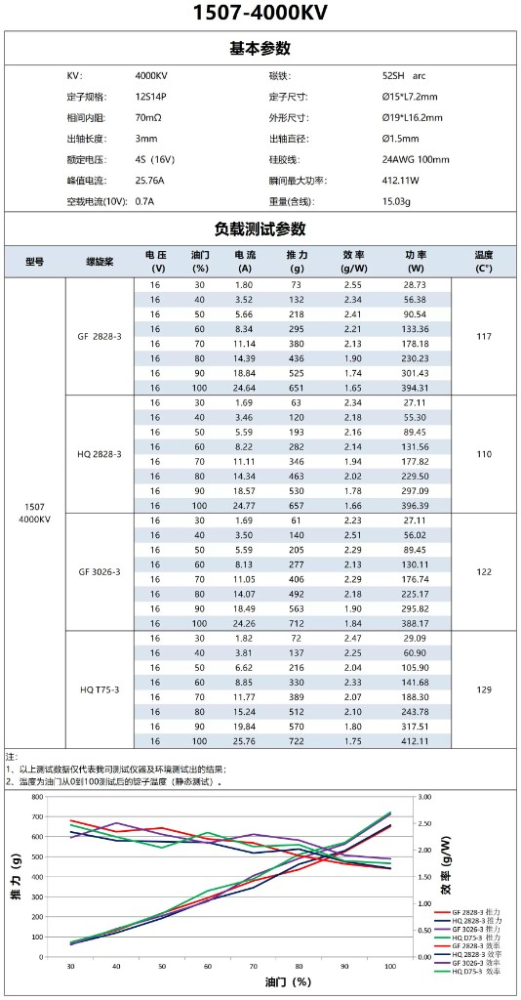
火神 VCI 1507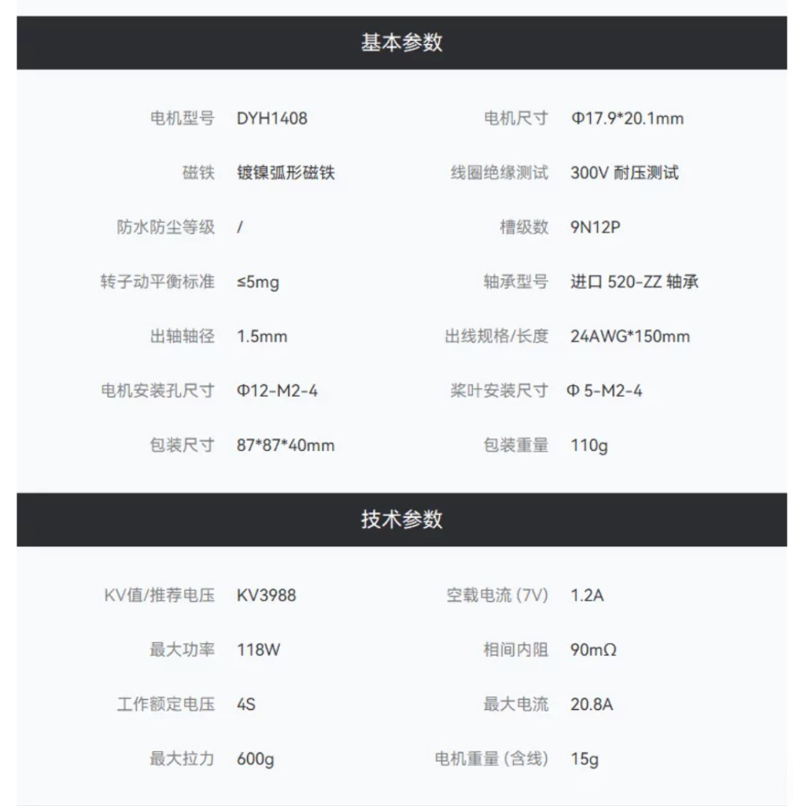
DYH1408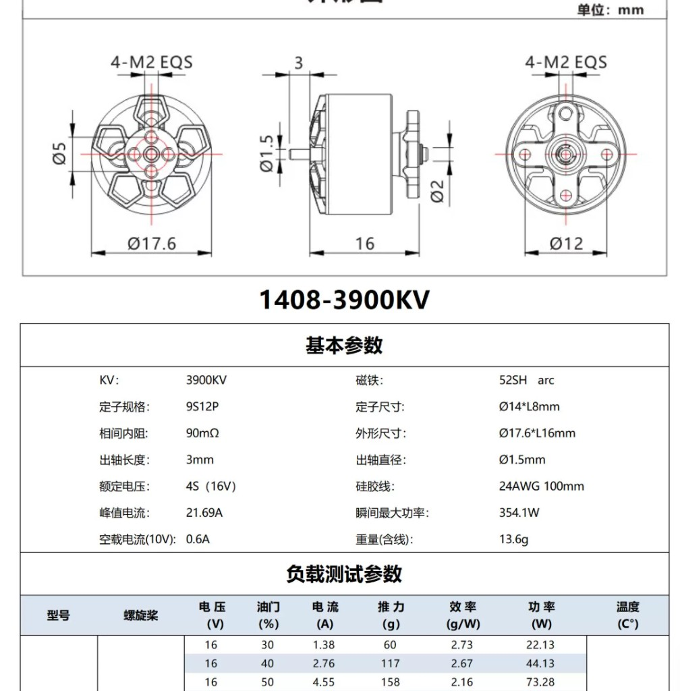
火神 VCI 1408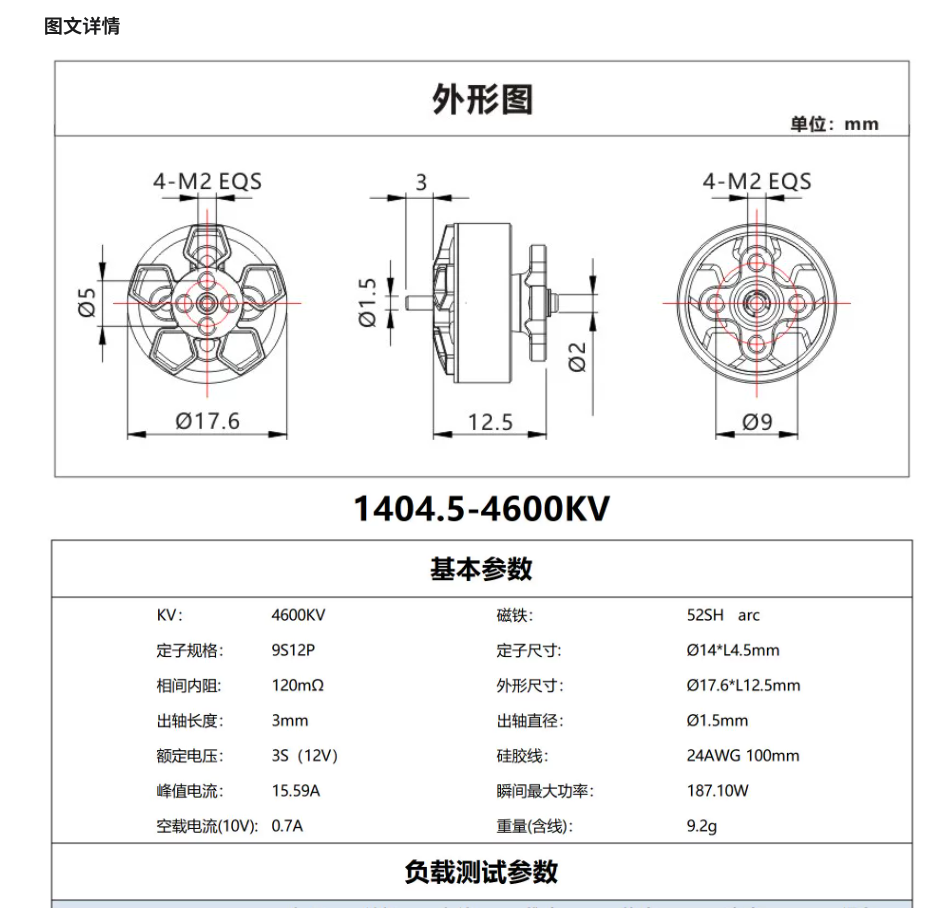
火神 VCI 1404.5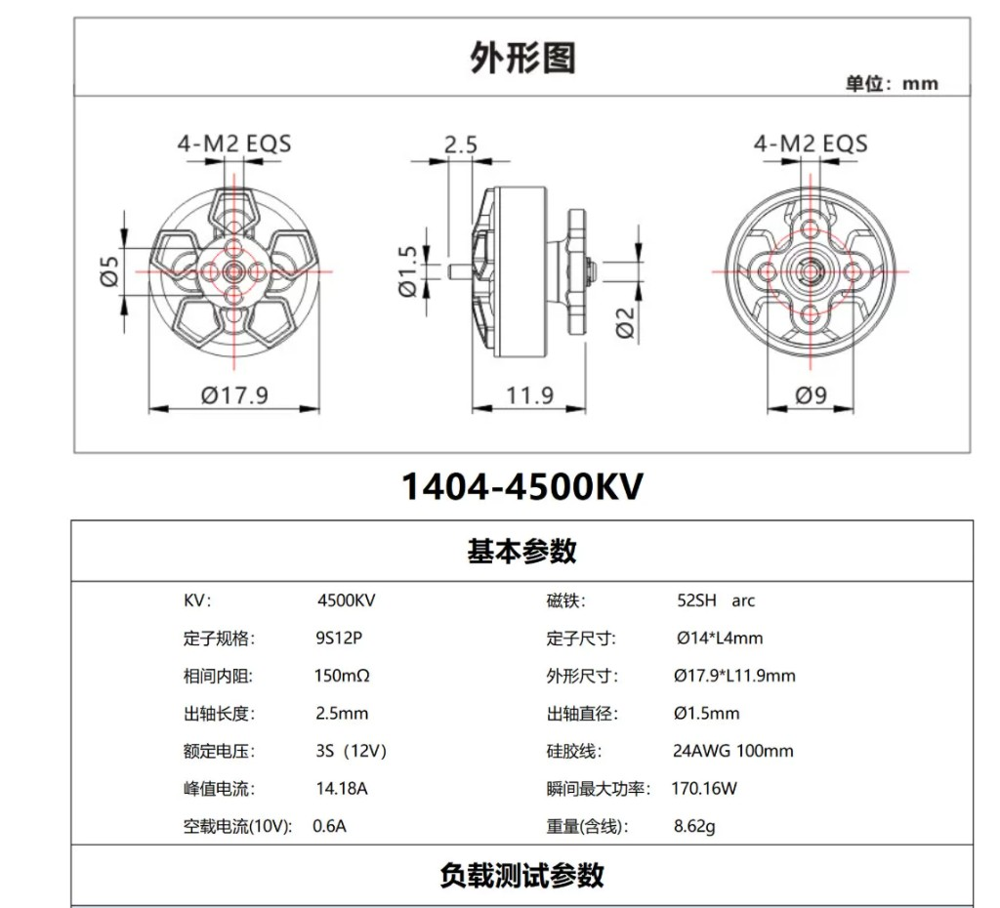
火神 VCI 1404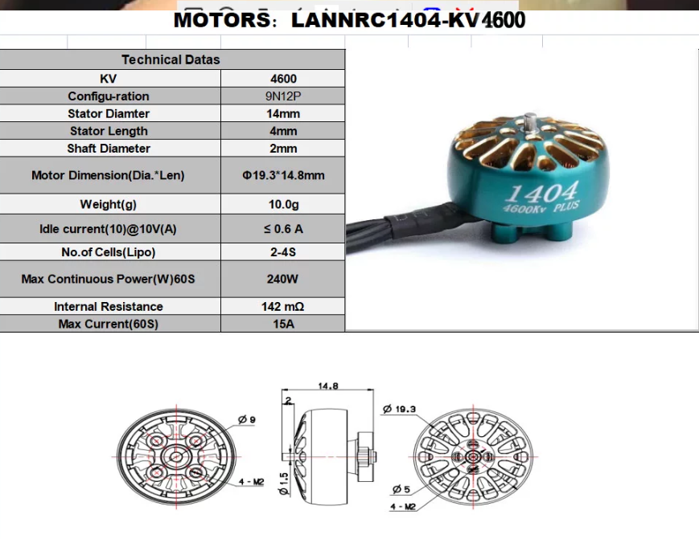
LANNRC 1404 4600KV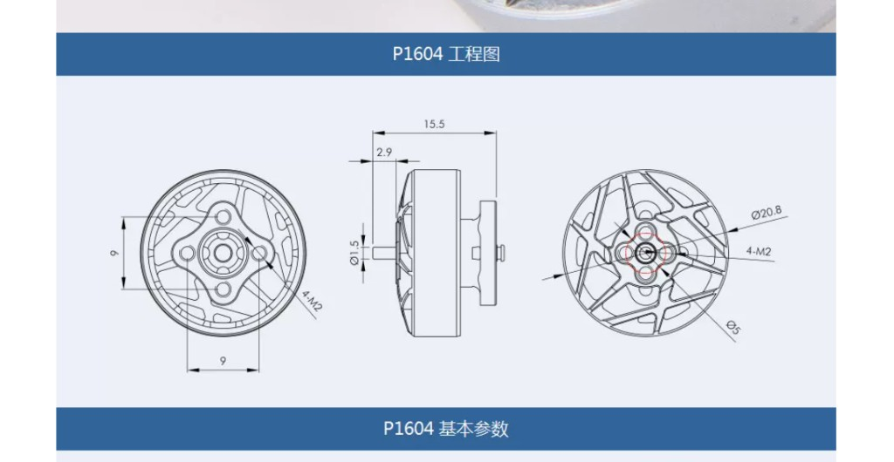
P1604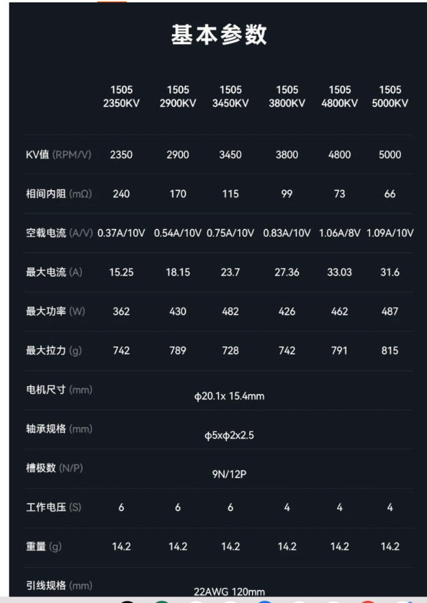
SIRIUS 1505優 同槳級推力最高（比 DYH 多約 51g）；中段也最強（60%＝295g、70%＝380g）；定子 Ø15×7.2、內阻僅 70mΩ；孔距 Φ12 與 DYH 同規。
缺 電流最高 24.6A（四軸爆發可近 100A）；力效略低；靜態掃測後 117°C；須配 ≥120–150C 電池與 ESC≥30A。
優 仍很強；電流比 1507 省約 4A；80%×10s 僅 35°C（測法不同，僅供參考）。
缺 峰值低於 1507；機身最長 20.1mm。
優 最輕的高推力選項；規格完整。
缺 峰值低於 1507／DYH。
優 T-MOTOR PACER 線（與 DYH 同品牌族）；比 1408 輕約 2g／顆；電流明顯較低；孔距 9×9mm。官網推薦 2.5–4″ 槳。
缺 原廠測功槳 GF3520-3（89mm）比賽違規；換 2828-3 後推力會下降，尚無同槳對照。 勿買 2850KV（6S）——電壓違規。勿與 Φ12／Φ9 機架混用。
攻防均衡，力效 1.76–1.78，四顆約 54g
要能硬頂又不想換最吃電的 1507 時的最佳解。
優 只有 9.2g，四顆 36.8g，比 1408 省 17g；電流低、續航好。
缺 推力僅 1408 的 6 成；原廠只給 3S 測功。
優 10g、2–4S、內阻 142mΩ、滿載 1 分鐘僅 65°C；與 VCI 1404／1404.5 同系 Φ9，可互換機架。 想用 4S 又不想上 1408 重量時可考慮。
缺 原廠測功槳若為 GF4024（>76mm）則比賽違規；換 2828-3 後推力／電流會下降。 同槳合法數據尚缺；暫勿直接跟 VCI 1404.5（2828／3S＝350g）比峰值。 入庫以原廠圖為準：4600KV、10g、15A／240W、142mΩ、2–4S（賣場另寫 17.99A 者不採用）。
11.6g · 4S · 孔距 9×9mm · 原廠峰值約 514g／16.8A*
T-MOTOR PACER；要省重又不想用 3S 1404 級時可考慮。須確認機架是 9×9，不是 Φ12／Φ9。勿買 2850KV（6S）。
*測功槳 3520 違規；實戰 2828 數據待補。官網推薦槳 2.5–4″。
Φ12：1507／DYH／1408／SIRIUS1505
Φ9：VCI 1404／1404.5／LANNRC 1404
9×9：P1604／GTS
碳板孔位不相容，硬鎖會歪、震、裂板。
有合規槳測功：優先 VCI 1404.5（350g／3S／2828）
已有 LANNRC、想跑 4S：先實測 2828 再定
最輕省電：VCI 1404 4500KV
| 馬達 | KV | 定子 | 內阻 | 含線重 | 外形 | 孔距 | 推力 |
|---|---|---|---|---|---|---|---|
| 火神 VCI 1507 | 4000 | 15×7.2 · 12S14P | 70 mΩ | 15.03 g | Ø19×16.2 | Φ12 4-M2 | 651 g |
| T-HOBBY（THOBBY）DYH1408 | 3988 | 14×8 · 9N12P | 90 mΩ | 15 g | Ø17.9×20.1 | Φ12 4-M2 | 600 g |
| 火神 VCI 1408 | 3900 | 14×8 · 9S12P | 90 mΩ | 13.6 g | Ø17.6×16 | Φ12 4-M2 | 574 g |
| T-HOBBY P1604 | 3800 | 12N14P | — | 11.6 g | Ø20.8×15.5 | 9×9 4-M2 | 514 g* |
| LANNRC 1404 | 4600 | 14×4 · 9N12P | 142 mΩ | 10.0 g | Ø19.3×14.8 | Φ9 4-M2 | 398 g† |
| 火神 VCI 1404.5 | 4600 | 14×4.5 | 120 mΩ | 9.2 g | Ø17.6×12.5 | Φ9 4-M2 | 350 g |
| 火神 VCI 1404 | 4500 | 14×4 | 150 mΩ | 8.62 g | Ø17.9×11.9 | Φ9 4-M2 | 325 g |
預算約 100g，一定要高 C。3S／4S 都可用，但用途不同。
單位為單芯與整包。FAI 比賽滿電單芯上限 4.25 V（LiHV 不可充到 4.35V 上場）。
| 項目 | 單芯 | 3S 整包 | 4S 整包 | 用途 |
|---|---|---|---|---|
| 最高（滿電／檢錄） | 4.25 V | 12.75 V | 17.00 V | FAI 上限；超過違規 |
| 標稱（休息電壓約） | 3.70–3.80 V | 11.1–11.4 V | 14.8–15.2 V | 規格標示常用 |
| 警告 Warning（建議） | 3.50–3.60 V | 10.5–10.8 V | 14.0–14.4 V | LED 紅閃提醒減油／換電 |
| 最低 Minimum（建議） | 3.30 V | 9.90 V | 13.20 V | 再低易過放；落地換電 |
| 儲存 | 3.80–3.85 V | 11.4–11.55 V | 15.2–15.4 V | 賽後／長期存放 |
vbat_warning_cell_voltage = 35（＝3.5V／芯）、vbat_min_cell_voltage = 33。猛加油瞬間壓降可能短暫紅閃屬正常。
以落地後休息 1–2 分鐘再量的電壓為準（飛行中猛油會暫時更低，那叫壓降）。單位：單芯／整包。
| 等級 | 單芯 | 3S | 4S | 學生要做什麼 |
|---|---|---|---|---|
| 安全區 | ≥ 3.60 V | ≥ 10.8 V | ≥ 14.4 V | 可正常飛；set 結束仍建議換電輪替 |
| 警告區（開始提醒） | 3.50–3.59 V | 10.5–10.77 V | 14.0–14.36 V | LED 應紅閃；減油、少硬頂；能落地就換。飛控 Warning 建議設 3.50–3.55 V／芯 |
| 危險區（立刻停） | ≤ 3.30 V | ≤ 9.9 V | ≤ 13.2 V | 立刻落地、換電；這顆本場勿再上場。飛控 Min 建議 3.30 V／芯 |
| 報廢邊緣 | ≤ 3.00 V | ≤ 9.0 V | ≤ 12.0 V | 極可能已傷芯；檢查鼓包；充電器拒充就淘汰。禁止再飛 |
| 現象 | 對比賽／電池的影響 |
|---|---|
| 休息後單芯常在 3.3 V 上下 | 化學損傷開始；容量變小、內阻變大、下次更容易壓降 |
| 單芯到約 3.0 V 以下還在飛 | 高風險鼓包、永久報廢；部分充電器拒絕充電 |
| 一芯明顯比其他低（不平衡） | 整包更易過放；平衡充；嚴重則報廢 |
| 飛行中突然沒力、重開機、失控落地 | 欠壓＋高電流；當場失分，也可能燒 ESC／接頭 |
| 鼓包、發燙、異味 | 立即停用；隔離冷卻，勿繼續充放電 |
| 時機 | 學生要做的 | 底線 |
|---|---|---|
| 賽前飛控 | Warning 3.50–3.55V／芯、Min 3.30V／芯＋LED W 覆蓋 | 沒紅閃＝不上場 |
| 飛行中 | 紅閃一直閃 → 減油、回邊、落地換電；不要為搶球硬撐 | 紅閃＝進入警告區 |
| 每個 set 結束 | 強制換電（尤其攻擊機）；量休息電壓寫進編號本 | 同一顆不連打 2 set |
| 落地量電壓 | 休息 1–2 分；4S 目標仍 ≥14.4V；<14.0 小心；<13.2 本場淘汰該顆 | 用上面色階表判定 |
| 充電 | 涼了再平衡充；鼓包／拒充就淘汰 | 熱充加重損傷 |
| 收納 | 賽後儲存 3.80–3.85V／芯；禁止空包裝隔夜 | 空包裝＝慢性過放 |
| 型號 | 容量 | C | 持續電流粗估 | 重量 | 接頭 | 學生怎麼用 |
|---|---|---|---|---|---|---|
| OVONIC 球機電池 4S1P | 960 | 150C | ~144 A | 需實秤（估 ~105–120g） | XT30 | 攻擊／硬防主力候選；容量比 850 多約 13%，較利 3 分鐘局 |
| OVONIC 球機電池 4S1P | 1060 | 150C | ~159 A | 需實秤（估 ~115–130g） | XT30 | 續航最寬；但重量可能擠壓 300g，上機前一定要整機實秤 |
| Tattu／格氏 200 球機專用 4S | 1100 | 110C 或 120C | ~121／132 A | 92g（110C）／101g（120C） | XT30 | 官方 220／200mm 足球機系列；容量大且意外地輕，先看外包裝是 110C 還是 120C |
| Tattu R-Line V5 4S（先前選型） | 850 | 150C | ~128 A | ~100 g | XT30 | 重量最穩；配 1507 仍首選之一 |
| GNB／Tattu 750–850 等（先前選型） | 750–850 | 95–120C | ~71–102 A | ~84–100 g | XT30 | 防禦／省重；見下方 4S 清單 |
XT30 · 暴力競速 FPV 球機款。C 與 V5 同級，容量更大，利於撐局；買到先實秤再定攻擊／防禦分配。
XT30 · 續航最強的已購包之一。務必整機含此電實秤 ≤300g；超重就改掛 960／Tattu 1100／850。
XT30 · 格瑞普／Tattu 官方「200 球機」系列（220mm 競賽常用）。 110C 版約 92g（64×28×32mm）、120C 版約 101g（64×28.5×35mm）。 請看包裝標籤確認是哪一款；C 低於 150 但仍夠 1408／DYH，配 1507 爆發略緊於 V5／Ovonic 150C。

59×30×32mm · XT30 · 卡在 100g 預算，C 值最高。硬對抗首選。 原廠頁

比 V5 省 12g，可留給框架或 LED。LiHV 比賽只能充到 4.25V／芯。 經銷頁

官網歸在 Drone Soccer；評價提到可撐完 3 分鐘一節。 原廠頁


最輕的 4S 選項，但 62A 對 1408 四軸對抗局略吃緊。 原廠頁
同重量下容量比 4S 大 → 續航較長；但電壓低 → 射門與硬頂弱於 4S。接頭多為 XT60，機上若是 XT30 建議重焊統一（轉接有電阻與鬆脫風險）。
| # | 型號 | 容量 | C | 重量 | 持續電流 | 接頭 |
|---|---|---|---|---|---|---|
| 1 | CNHL Black 1100 | 1100 | 100C | ~115 g | ~110 A | XT60／Dean |
| 2 | ManiaX 750 同級 | 750 | 100C | ~68 g | ~75 A | XT60 |
| 3 | Fullymax 1300 | 1300 | 100C | ~117 g | ~130 A | XT60 |
| 4 | Tattu Funfly 1300 | 1300 | 100C | ~113 g | ~130 A | XT60 |
F9A-B 上限 3 吋（76mm）、禁止金屬槳。
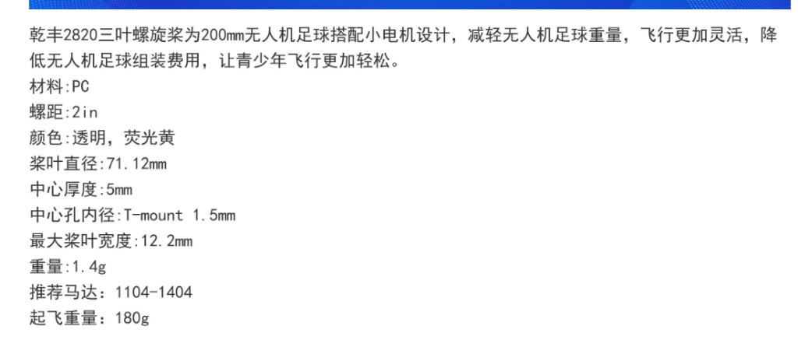
GEMFAN 2820-3 規格| 型號 | 直徑 | 螺距 | 重量 | 官方推薦馬達 | 起飛重量 | 合規 |
|---|---|---|---|---|---|---|
| GEMFAN 2828-3 | 71.12 mm | 2.8" | 1.7 g | 14–15 系列馬達 | 300 g | ✓ |
| HQProp 2828-3 | 71.12 mm | 2.8" | 1.8 g | 14–15 系列（原廠測功常用） | — | ✓ |
| GEMFAN 2826-3 | 71 mm | 2.4" | 1.47 g | 1205–4300KV | 230 g | ✓ |
| GEMFAN 2820-3 | 71.12 mm | 2.0" | 1.4 g | 1104–1404 | 180 g | ✓ |
| GF3016／3026／3028 | 76 mm | — | — | — | — | ✓ 上限 |
| GF D63 | 63 mm | — | — | — | — | ✓ |
| GF3520-3 | 89 mm | — | — | — | — | ✗ 違規 |
| GF4023／4024／4042 | ~102 mm | — | — | — | — | ✗ 違規 |
| 馬達 | 槳 | 滿油門推力 | 電流 | 力效 | 溫度 |
|---|---|---|---|---|---|
| 火神 VCI 1507 | GF 2828-3 | 651 g | 24.64 A | 1.65 | 117 °C |
| HQ 2828-3 | 657 g | 24.77 A | 1.66 | 110 °C | |
| 火神 VCI 1408 | GF 2828-3 | 574 g | 20.35 A | 1.76 | 110 °C |
| HQ 2828-3 | 573 g | 20.10 A | 1.78 | 107 °C |
F9A-B 上場 3 台＋替補 2 台。可混用馬達，槳建議統一。
攻擊：約 285–295g，可換取較穩的碰撞與卡位。
防禦：約 250–285g，重視轉向、追球、續航與翻正。
滿載不一定錯，但會更耗電、更熱、轉向較鈍，而且幾乎沒有送檢容錯。
Φ12 4-M2：1507／DYH1408／火神 VCI 1408／SIRIUS 1505。
Φ9 4-M2：火神 VCI 1404／1404.5／LANNRC 1404。
9×9mm：P1604／GTS V3。
三系不相容。不要硬鎖或斜鎖馬達。
C 數決定供電能力；mAh主要決定可用時間。
850mAh／150C 適合爆發，但 1507 猛攻未必撐滿 3 分鐘。
一般重型 1100mAh 4S（~140–150g）會擠爆 300g；本隊 Tattu 球機專用 1100（約 92–101g）則可用。
| 上場前檢查 | 學生要做的事 | 不合格風險 |
|---|---|---|
| 重量 | 裝上實際比賽電池與全部固定件後再秤；目標 ≤295g | 超過 300g 不得上場 |
| 電池電壓 | 最高 4S，每芯 ≤4.25V；LiHV 不可充到 4.35V／芯；確認低壓紅閃有開 | 超壓違規；無警告易過放 |
| 防過放 | 4S 落地休息：<14.0V 小心、<13.2V 停用該顆；紅閃就減油／換電；每 set 換電；勿空包裝 | 鼓包報廢、整隊電池打穿 |
| 螺旋槳 | 使用 ≤76mm；主力統一 2828-3，檢查裂痕與固定螺絲 | 超徑違規；裂槳可能失控 |
| 馬達孔位 | 確認 Φ12、Φ9 或 9×9mm；四顆螺絲平整鎖入 | 硬鎖會歪斜、震動或損壞碳板 |
| LED | 主條≥16＋尾燈≥6；射手尾燈＝對方隊色；亮度約 30–50%（看得見即可）；低電壓要紅燈閃爍；中場勿接電腦改色 | 識別／射手錯色；過亮刺眼；低壓無提醒易沒電落地 |
| 安全功能 | 測試 fail-safe、解鎖／上鎖、烏龜模式；人員遠離槳面再通電 | 失控與人員受傷 |
| 每 set 換電 | 落地記錄剩餘電壓、電池與馬達溫度；熱電池冷卻後再充；攻擊機強制換電 | 過放鼓包、壓降落地、續航崩壞 |
攻擊：火神 VCI 1507＋Tattu V5 850／150C
防禦：火神 VCI 1408＋Tattu 750／95C 或 V5 850
推力最強。1507 必須 ≥120–150C、ESC≥30A。
攻擊：DYH1408＋Tattu V5 850／150C
防禦：火神 VCI 1408＋750／95C
電流比 1507 省，較容易撐滿 3 分鐘。
火神 VCI 1404.5＋3S 850–1100／≥100C
續航最寬裕；硬對抗明顯弱。
| 配置 | 推薦電池 | 可用電量 | 輕飛／控場 ≈12–15A |
混合對抗 ≈18–22A |
猛攻硬頂 ≈28–35A |
3 分鐘結論 |
|---|---|---|---|---|---|---|
| 攻擊 · 火神 VCI 1507 | Tattu V5 850mAh 4S 150C（100g） | ~680 mAh | ~2.7–3.4 分 | ~1.9–2.3 分 | ~1.2–1.5 分 | 猛攻撐不滿；混合約 2 分。要穩 3 分需控油門或加容量（但會超重） |
| 攻擊 · DYH1408 | Tattu V5 850mAh 4S 150C（100g） | ~680 mAh | ~3.0–3.8 分 | ~2.1–2.5 分 | ~1.4–1.7 分 | 比 1507 省電；混合對抗接近 2.5 分，控場可過 3 分 |
| 硬防 · 火神 VCI 1408 | Tattu 750mAh 4S 95C（84g） | ~600 mAh | ~2.7–3.3 分 | ~1.8–2.2 分 | ~1.2–1.4 分 | 輕防可過 3 分；硬對抗偏緊。要穩就改 850／150C |
| 硬防 · 火神 VCI 1408 | Tattu V5 850mAh 4S 150C（100g） | ~680 mAh | ~3.2–4.0 分 | ~2.2–2.6 分 | ~1.5–1.8 分 | 最穩的防禦配；控場穩過 3 分 |
| 輕防 · 1404.5 | 3S 1100mAh ≥100C（~115g） | ~880 mAh | ~4.0–5.0 分 | ~2.8–3.5 分 | ~2.0–2.5 分 | 最容易飛滿 3 分；代價是推力弱 |
| 輕防 · 1404.5 | 3S 750mAh ≥100C（~68g） | ~600 mAh | ~2.7–3.3 分 | ~1.8–2.2 分 | ~1.3–1.5 分 | 壓重用；混合對抗剛好卡邊 |
| 項目 | 攻擊（1507＋V5） | 攻擊（DYH＋V5） | 硬防（1408＋750） | 輕防（1404.5＋3S） |
|---|---|---|---|---|
| 馬達 ×4 | 60.1 g | 60.0 g | 54.4 g | 36.8 g |
| 槳 ×4（2828-3） | 6.8 g | 6.8 g | 6.8 g | 6.8 g |
| 電池 | 100 g | 100 g | 84 g | ~68–115 g |
| 飛控＋電調（AIO，8.5–12.6g） | ~8.5–12.6 g | ~8.5–12.6 g | ~8.5–12.6 g | ~8.5–12.6 g |
| 小計（不含框架） | ~175–177 g | ~175–177 g | ~154–156 g | ~121–168 g |
| 可用框架＋LED＋線材 | ~123–125 g | ~123–125 g | ~144–146 g | ~132–179 g |
| 策略 | 優點 | 缺點 | 適合角色 |
|---|---|---|---|
| 較輕（約 250–285g） | 加速、轉向與翻正較快；平均電流、溫升較低；續航較長；維修後較不易超重 | 碰撞時較容易被頂開；卡位與慣性較弱 | 防禦、控場、追球 |
| 偏重（約 285–295g） | 碰撞與卡位較穩；高速衝撞動量較大；仍保留少量送檢容錯 | 轉向較鈍、耗電與溫升較高 | 攻擊、短時硬防 |
| 299g 貼上限 | 把合法質量幾乎用滿，硬碰硬時較不容易被推開 | 僅剩 1g 容錯；秤差、膠帶、換線或維修都可能超重；續航與靈活性最差 | 只適合實秤穩定且明確採硬撞戰術的攻擊機 |
本隊飛控共 三款 AIO（飛控＋4in1 電調一體）：HAKRC F411 40A、RATE F4 40A、牛博特 Oxbot Flow AIO45。三款都支援可編程 LED，但都是一路 LED 輸出。
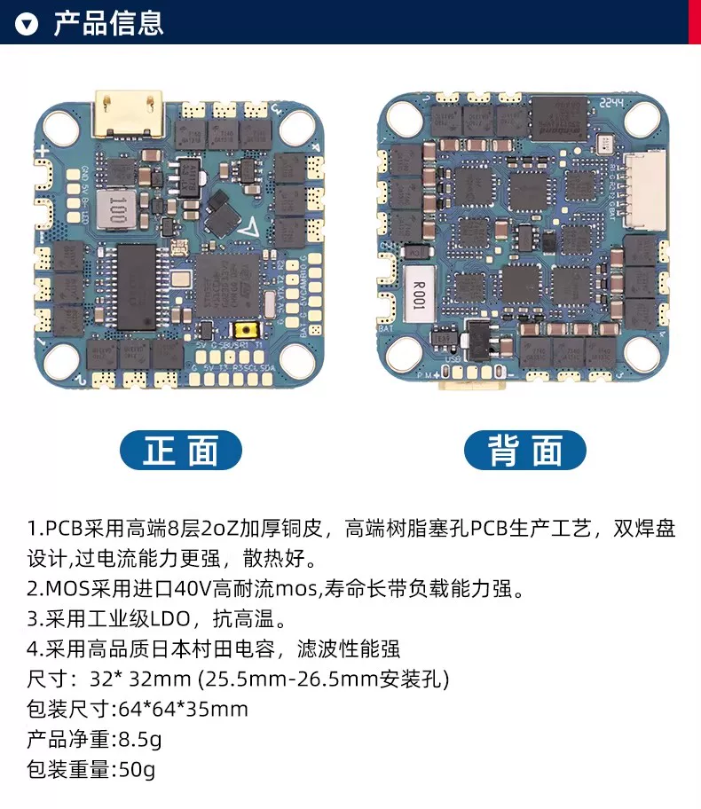
約 31–32mm 方板（產品圖常寫 32×32、官網多寫 31×31）、8 層 2oZ 厚銅、40V MOS。電調 BLHeli_S、2–6S、持續 40A／峰值 45A，對 1408／DYH／1507 綽綽有餘。
自帶可編程 LED 焊盤（LED B- 5V GND）與內建電流感測（產品圖電流計比例 210）。
注意 BEC 只有 5V／2A——22 顆純色燈約 0.2–0.4A 沒問題，但不要整條 60 顆全亮白。
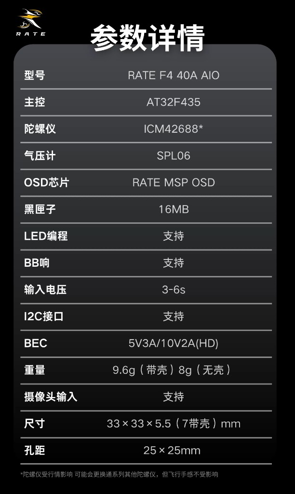
33×33×5.5mm（有殼高 7mm）。主控 AT32F435 @ 288MHz（廠方稱較 F722 約 +34%），支援雙 8K 與雙向 DShot。 內建 32bit 電調、持續 40A、3–6S。BEC 5V 3A＋10V 2A（HD）；SPL06、MSP OSD、16MB 黑匣子。 LED：5V／GND／DIN。配件含 XT30 電源線與 35V 470µF 電容——一定要焊。
三塊板裡 LED 餘裕最大（5V 4A），而且內建 ELRS 接收機——不用外接、不用焊接收機線，省重又少一個掉線點。
電調 OX32 32bit、45A、3–6S，預設開 雙向 DShot（可開 RPM 濾波）。
ICM42688P（含時鐘同步）、DPS310 氣壓計、16MB 黑匣子、MAX7456 類比 OSD。孔距 25.5×25.5mm。
Betaflight target：OXBOT_FLOW_AIO45。
缺點：12.6g 是三塊裡最重（比 HAKRC 多約 4g）；球機不裝圖傳時記得用 VTX BEC OFF 開關關掉圖傳供電。
| 項目 | HAKRC F411 40A | RATE F4 40A | Oxbot Flow AIO45 | 球機影響 |
|---|---|---|---|---|
| 主控 | STM32F411CEU6 | AT32F435 | AT32F435 | F411 資源較少但夠用。三塊 target 都不同，勿互刷 |
| IMU | ICM42688 | ICM42688* | ICM42688P（時鐘同步） | 同級；Oxbot 有 CLKin 略優 |
| OSD | AT7456E（類比） | RATE MSP OSD | MAX7456（類比） | 有鏡頭才用 |
| 黑匣子 | 16M | 16MB | 16MB（W25Q128） | 調參可下載 log |
| BEC | 5V 2A | 5V 3A（＋10V 2A） | 5V 4A | LED 最寬裕＝Oxbot；F411 板務必調暗 |
| 電調固件 | BLHeli_S（G-H-30） | 32bit＋雙向 DShot | OX32 32bit＋雙向 DShot | 攻擊機優先 RATE／Oxbot：可開 RPM 濾波；F411 不能開 |
| 電調電流 | 持續 40A／峰值 45A | 穩定 40A | 45A | 單顆馬達峰值約 25A → 三塊都夠 |
| 電池輸入 | 2–6S | 3–6S | 3–6S | 本隊 4S 都 OK |
| 接收機 | 需外接（SBUS／UART） | 需外接（ELRS→UART2） | 內建 ELRS | Oxbot 省一顆接收機＋線，少一個故障點 |
| 電流計比例 | 210 | 未標示（實飛校正） | Betaflight 預設值 | F411 先設 ibata_scale = 210 |
| 重量 | 8.5g | 8g／9.6g | 12.6g | Oxbot 多約 3–4g；但省下接收機（約 1–2g）後差距縮小 |
| 尺寸／孔距 | 約 31–32mm／25.5mm（亦常見 26.5） | 33×33mm／25×25mm | 25.5×25.5mm | 孔距三種不完全相同！機架要先對好 |
| 特殊功能 | — | 10V 2A 供 HD 圖傳 | VTX BEC OFF 開關 | 球機不裝圖傳就把 Oxbot 的圖傳供電關掉 |
| 包裝配件 | M2 減震球、XT30、270µF 電容 | 減震球、排線、35V 470µF、XT30 | （看賣場） | 電容一定要焊在 VBAT 正負極旁 |
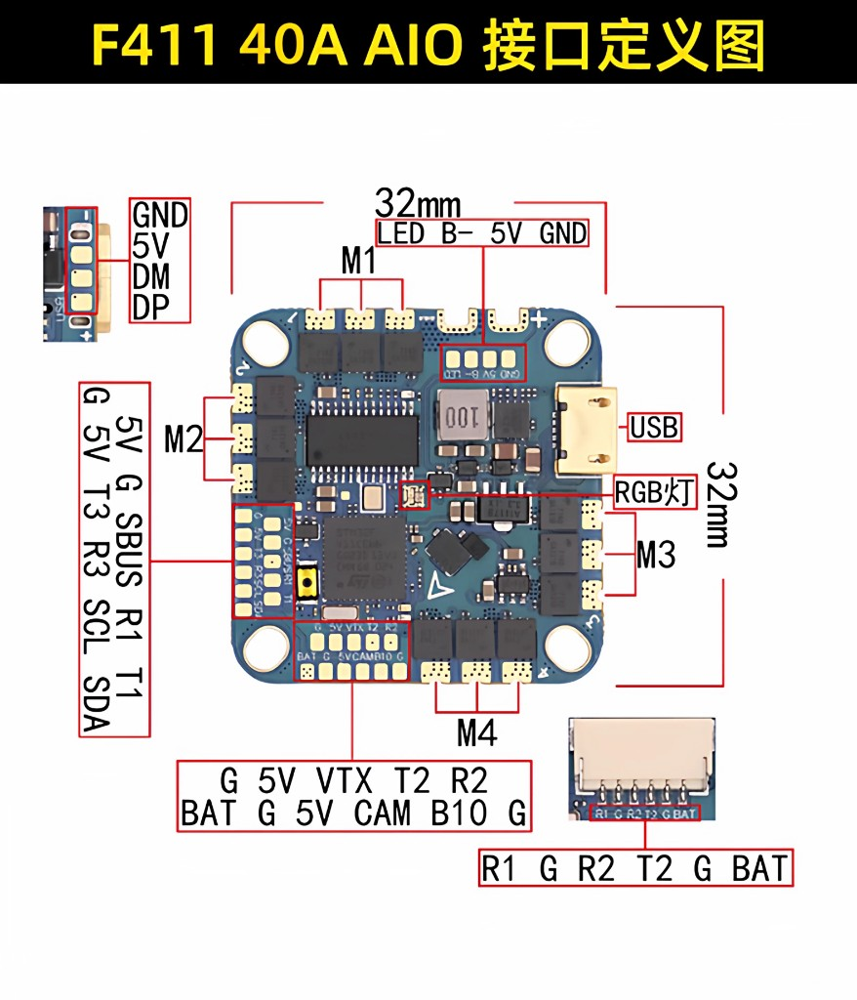
M1–M4 在四角；LED 焊盤在板子上緣，另有原廠 RGB 燈與 USB。
| 焊盤／插座 | 腳位 | 接什麼 |
|---|---|---|
| LED（上緣） | LED B- 5V GND | WS2812 燈條：訊號→LED、＋5V→5V、負→GND。B- 是蜂鳴器負極，別當 GND 用 |
| M1–M4（四角） | 各角一組 | 四顆馬達；順序與轉向在 Betaflight 馬達頁確認 |
| 左側排 | 5V G SBUS R1 T1 | 接收機（SBUS 或 UART1 的 R1／T1） |
| 左側排（下） | G 5V T3 R3 SCL SDA | UART3 與 I2C（外掛感測器） |
| 下方排 | G 5V VTX T2 R2 | 圖傳與 UART2 |
| 下方排 | BAT G 5V CAM B10 G | 電池電壓、鏡頭、B10（蜂鳴器／額外 IO） |
| 6pin 插座 | R1 G R2 T2 G BAT | 圖傳／接收機用排線，免焊 |
| USB 旁 | GND 5V DM DP | USB 備用焊盤（Type-C 撞壞時救援） |
| 板中央 | RGB 燈 | 原廠板載燈，非比賽用主燈 |
B-。焊完先不接電池、只插 USB 確認燈條會亮再上電。
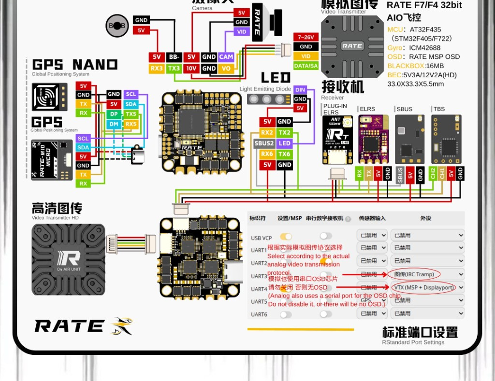
鏡頭、圖傳、LED、蜂鳴器、接收機、GPS 全部標好。球機最常用下面三行。
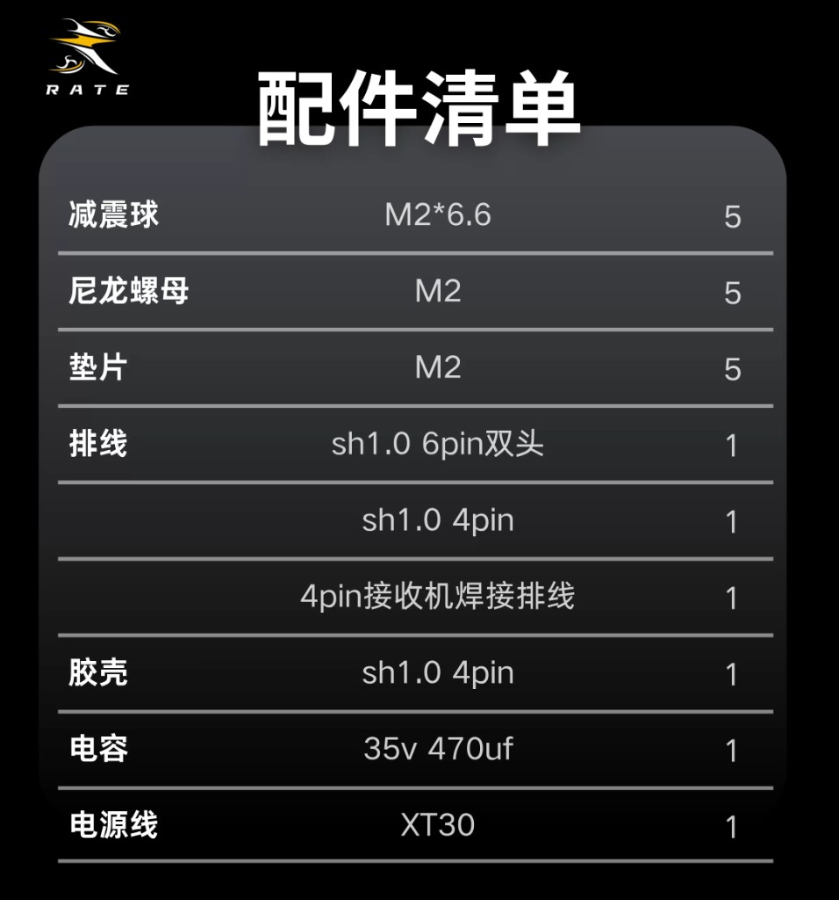
減震球 M2×6.6×5、尼龍螺母與墊片、sh1.0 排線、35V 470µF 電容、XT30 電源線。
| 外設 | 接法（官方圖） | 球機備註 |
|---|---|---|
| LED 燈條 | 5V GND DIN→LED | WS2812 訊號進 LED 焊盤；環＋尾串成一路 |
| 蜂鳴器 | 5V BB- | 可開 visual beeper，低電燈也閃 |
| ELRS／TBS 接收機 | 5V GND RX2 TX2 | 串口接收機；端口表 UART2＝Serial RX |
| SBUS 接收機 | 5V GND SBUS | 走專用 SBUS 焊盤 |
| 攝像頭 | 5V GND VID | 純對戰可不裝 |
| 類比圖傳 | VBAT（7–26V）、GND、VID、DATA／SA | UART1＝VTX 控制（依協議選） |
| HD 圖傳（O4 等） | 側邊 6pin（10V／VBAT、GND、UART） | UART4＝VTX（MSP＋DisplayPort） |
| GPS（選配） | UART3 或 UART5＋I2C | 室內球機通常不裝 |
| 濾波電容 | 35V 470µF 焊在電池正負極旁 | 包裝有附；不焊易壓降／燒板 |
| 項目 | 設定 | 為什麼 |
|---|---|---|
| 電調協議 | Dshot300（或 Dshot600） | BLHeli_S 支援到 Dshot600；F411 用 Dshot300 最穩 |
| RPM 濾波 | 不能開 | 無雙向 Dshot；硬開會不起轉 |
| 電流計比例 | set ibata_scale = 210 | 官方標示 210 |
| LED | 亮度約 40 | BEC 只有 2A |
set ibata_scale = 210 feature LED_STRIP set ledstrip_brightness = 40 set ledstrip_visual_beeper = ON set vbat_warning_cell_voltage = 35 set vbat_min_cell_voltage = 33 save
HAKRCF411D、電調 BLHELI_S (G-H-30)。刷之前先記下來。
| 項目 | 設定 | 為什麼 |
|---|---|---|
| 電調協議 | Dshot300／600＋雙向 DShot ON | 32bit 電調支援；可開 RPM 濾波讓對抗更穩 |
| RPM 濾波 | 可開 | 這是相對 F411 的最大優勢 |
| 接收機（ELRS） | UART2＝Serial RX | 線接 5V GND RX2 TX2 |
| LED | 亮度約 40–50 | BEC 5V 3A，餘裕比 F411 大 |
| 低壓警告 | Warning 3.5V／Min 3.3V／芯 | 兩塊板相同 |
| 氣壓計 | 球機室內可關 | 不用高度模式就關 |
feature LED_STRIP set ledstrip_brightness = 40 set ledstrip_visual_beeper = ON set vbat_warning_cell_voltage = 35 set vbat_min_cell_voltage = 33 save
| 項目 | 設定 | 為什麼 |
|---|---|---|
| Betaflight target | OXBOT_FLOW_AIO45 | 主控 AT32F435；勿刷成 RATE 或 F411 的 target |
| 電調協議 | Dshot300／600＋雙向 DShot ON | OX32 32bit 支援；原廠預設已開 DShot telemetry |
| RPM 濾波 | 可開 | 對抗震動大，開了較穩 |
| 接收機 | 內建 ELRS，不用外接 | 只要把 ELRS 對頻（bind）；省一顆接收機與焊線 |
| LED | 亮度 40–50 都很寬裕 | BEC 5V 4A，三塊板中餘裕最大 |
| 圖傳供電 | 球機不裝圖傳 → 用 VTX BEC OFF 關掉 | Betaflight 開關名稱就叫 VTX BEC OFF（PINIO），省電、少發熱 |
| 低壓警告 | Warning 3.5V／Min 3.3V／芯 | 三塊板都一樣 |
| 氣壓計 | DPS310；室內球機可關 | 不用高度模式就關 |
feature LED_STRIP set ledstrip_brightness = 45 set ledstrip_visual_beeper = ON set vbat_warning_cell_voltage = 35 set vbat_min_cell_voltage = 33 save
| 燈位 | 規定 | 學生要做的 |
|---|---|---|
| 環形主燈 | ≥16 顆；整場紅隊紅、藍隊藍 | 賽前切成主辦指定隊色，任意角度都要看得清 |
| 尾巴識別燈 | ≥6 顆；各機顏色彼此好分辨 | 勿跟本隊紅／藍主色搞混 |
| 射手尾燈（＝攻擊手） | 紅隊射手＝藍；藍隊射手＝紅 | 必須是對方隊色；換射手就要改這台尾燈 |
| 假設（22 顆） | 5V 端電流 | 功率 | 折回 4S 電池側 |
|---|---|---|---|
| 全亮白 | 22×60mA＝1.32 A | ≈6.6 W | ≈ 0.52 A |
| 純紅或純藍 100% | 22×20mA＝0.44 A | ≈2.2 W | ≈ 0.17 A |
| 純色＋亮度 40% | ≈0.18 A | ≈0.9 W | ≈ 0.07 A |
| （對照）誤裝 60 顆純色 100% | 1.2 A | ≈6 W | ≈0.47 A；易壓垮飛控 5V |
消耗 mAh ≈ 電流(A) × 0.05 × 1000；換算（馬達平均 15A）：秒數 ≈ mAh × 3.6 ÷ 15。
| 項目（22 顆） | 電池側電流 | 3 分鐘耗電 | 佔 850mAh | ≈ 馬達 15A 可飛 |
|---|---|---|---|---|
| 全亮白 | 0.52 A | ≈26 mAh | ≈3.1% | ≈6 秒 |
| 純紅／藍 100% | 0.17 A | ≈9 mAh | ≈1.1% | ≈2 秒 |
| 純色 40% 亮度 | 0.07 A | ≈3.5 mAh | ≈0.4% | ≈1 秒 |
| 100%→40% 省下的 | — | ≈5.5 mAh | ≈0.6% | ≈1–2 秒 |
| 馬達（對抗局平均） | 12–20 A | ≈600–1000 mAh | 整包 | 整局 3 分鐘 |
set ledstrip_brightness = 40：不刺眼、BEC 較涼。
選手常看不見遙控電壓表，靠球機燈號。低電要明顯閃爍，提醒減油、回邊、換電。
| 項目 | 建議設定 | 說明 |
|---|---|---|
| 警告 Warning | 單芯 3.5–3.6 V | vbat_warning_cell_voltage |
| 最低 Minimum | 單芯 3.3 V | vbat_min_cell_voltage |
| LED 覆蓋 | 燈珠加 W（Warnings） | 低電紅閃 |
| 視覺蜂鳴 | ledstrip_visual_beeper = ON | 蜂鳴時燈也閃 |
feature LED_STRIP set ledstrip_brightness = 40 set ledstrip_visual_beeper = ON set vbat_warning_cell_voltage = 35 set vbat_min_cell_voltage = 33 save
CLI 電壓單位 0.1V（35＝3.5V／芯）。燈珠例：led 0 0,0::CW:2。完整 3S／4S 電壓表見「電池」分頁。
環／尾若並聯或整條同色，就無法同時有隊色＋識別色。解法由易到難：
| # | 解法 | 做法 | 適合誰 |
|---|---|---|---|
| 1 | 專用射手機 | 1 台固定射手尾燈色；換射手＝換人／換機 | 全隊首選 |
| 2 | 燈鏈分段 | 環＋尾串成一條 WS2812；燈珠編號分色（0–15 隊色、16–21 尾燈） | 一路 LED |
| 3 | AUX／撥桿切色 | 預存一般／射手兩套，落地遙控切 | timeout 換射手 |
| 4 | 尾燈硬體開關 | 飛控只驅環燈；尾燈獨立撥色 | 不會分段時 |
| 5 | 雙路輸出 | 少數板有 LED2 或外掛控制器 | 一般飛控沒有 |
依 FAI Sporting Code Section 4, Volume F9 Drone Sport（2026/1/1 生效）。
| 子級 | 球框直徑 | 總重上限 | 電池上限 | 槳徑上限 | LED |
|---|---|---|---|---|---|
| F9A-B | 20cm +2cm（裝進 22cm 圈） | ≤300 g | 4S（≤17V） | 76 mm | ≥16 |
| F9A-C（中國聯賽） | 10cm | ≤27–30 g | ≤4.35V | 42 mm | ≥4 |
賽前送檢、賽中隨時可抽查；合格後貼不易偽造的標示，不合規可取消資格。
| 檢錄項目 | 合格標準（F9A-B） | 實務建議 |
|---|---|---|
| 總重 | 含外框＋電池＋全部裝備 ≤300 g | 用比賽電池實秤，目標 ≤295 g |
| 外徑 | 20 cm +2 cm，須裝進 Ø22 cm 圈 | 自備 22 cm 環預檢 |
| 突出物 | 球框外不可有任何突出 | 檢查天線、槳、螺絲頭 |
| 框架 | 塑膠／複材，禁止金屬；底平面 ≤2 cm；單開口 ≤150 cm² | 金屬骨架不合格 |
| 馬達 | 僅電動，最多 4 顆 | — |
| 電池電壓 | 最高 4S；單芯 ≤4.25 V（4S≤17 V） | 每 set 前可量；LiHV 勿充 4.35V |
| 螺旋槳 | ≤76 mm；禁止金屬槳 | 卡尺量尖對尖；避免卡在邊緣的槳 |
| LED | 主條 ≥16；後燈 ≥6；可切隊色；射手尾燈＝對方隊色；亮度約 30–50%；低電紅閃 | 通電確認；中場無法接電腦改色→備射手機或 AUX 切色 |
| Fail-safe | 觸發後馬達立即停止 | 關機／失控模擬必測 |
| 禁裝 | 無預編程機動、無自動定位／路徑修正 | 烏龜／翻正允許 |
| 馬達 | 電壓 | F9A-B |
|---|---|---|
| T-HOBBY（THOBBY）DYH1408 3988KV | 4S | ✓ |
| 火神 VCI 1408 3900KV | 4S | ✓ |
| 火神 VCI 1404.5 4600KV | 3S（原廠測功） | ✓ |
| 火神 VCI 1404 4500KV | 3S | ✓ |
| 火神 VCI 1507 4000KV | 4S | ✓ |
| RCinpower GTS V3 1404+ 3850／4680KV | 3–4S | ✓ |
| LANNRC 1404 4600KV | 2–4S | ✓ |
| SIRIUS 1404 3850／4600／4800／5000KV | 3–4S | ✓ |
| SIRIUS 1505 3800／4800／5000KV | 4S | ✓ |
| P1604 3800KV | 4S | ✓ |